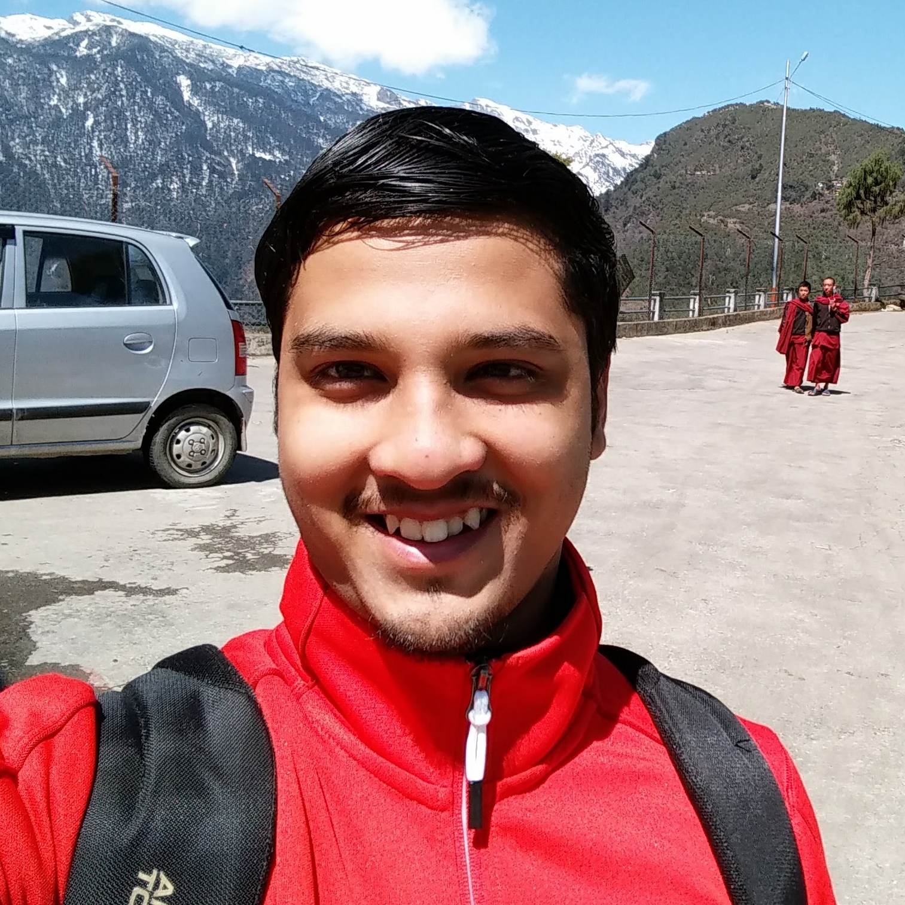

Probhonjon Baruah

About
Experience
Education
Skills
Publications
Probhonjon
Baruah
Bengaluru, India ·
probhonjonbaruah@gmail.com
I was amongst the 1000 students selected across the globe for the Google Summer of Code program.
I am a certified Java Full Stack Developer.
Certificate
I have qualified through the prestigious JEE examination and was selected in the top 1% for admissions to the Indian Institute of Technologies.
Experience
Software Developer
October 2018 - Present
Associate Software Developer
CGI
Role: Full Stack Developer
Proposed, designed and implemented a DevOps framework for use across the entire sub-business-unit.
Docker, Kubernetes
Ansible for automation
Elasticstack for logging.
Developed a dashboard for deploying and monitoring web apps on servers. It was based on a microservice based architecture.
Frontend: Angular4
Backend: Java (Springboot)
Database: Mongodb, Redis
Testing: JUnit, Mockito
Slides
August 2017 - September 2018
Research Officer
Genome Institute
The work involved implementing a machine learning pipeline that helps in the prediction of somatic point mutations(SNVs) in cancer genomes.
The work was published as a research paper, the preprint of which can be found on this
link
May 2016 - July 2016
Software Developer
Google Summer of Code
I wrote unit tests for an R package used for data anonymization called “sdcMicro”.
Language: R
Official Link
Code Link
April 2016 - August 2016
Education
Indian Institute of Technology Guwahati
Bachelor of Technology
Major: Biosciences And Bioengineering
Minor: Electronics And Communication Engineering
July 2013 - June 2017
Salt Brook Academy, Dibrugarh
Higher Secondary
Stream: Science
May 2011 - May 2013
Salt Brook School, Dibrugarh
High School
1999 - May 2011
Skills
Full Stack:
Frontend, Backend, DevOps
Frontend:
ES6, Angular2, React
Backend:
Spring, Java, Flask, Python
DevOps:
Kubernetes, Docker, Ansible
Machine Learning:
Tensorflow, Keras, R
Databases:
Redis, MongoDb, Elasticsearch
Publications
SMuRF: Portable and accurate ensemble-based somatic variant calling, BioRxiv, 2018. (Preprint)